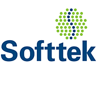

| ¿Qué es? | ¿Qué puestos relacionados a mi carrera hay? |
|---|---|
|
Softtek es una empresa multinacional de tecnología de la información y servicios de consultoría, fundada en México en 1982. Actualmente tiene presencia en más de 30 países en
América Latina, Norteamérica, Europa y Asia. La empresa se enfoca en ayudar a sus clientes a transformar digitalmente sus negocios, ofreciendo soluciones y servicios personalizados
que abarcan desde la consultoría estratégica hasta la implementación de tecnología y la gestión de operaciones. Entre los servicios que ofrece Softtek se encuentran la consultoría en transformación digital, la gestión de la nube, el desarrollo de software, la seguridad cibernética, el análisis de datos y la automatización de procesos de negocio, entre otros. La empresa se enfoca en adaptarse a las necesidades y objetivos específicos de cada cliente, ofreciendo soluciones que les permitan mejorar su eficiencia y productividad, reducir costos y mejorar su experiencia de usuario. Softtek se destaca por su enfoque en la innovación y la colaboración con sus clientes, trabajando en estrecha colaboración con ellos para comprender sus necesidades y ofrecer soluciones personalizadas. La empresa cuenta con una amplia experiencia en diversos sectores, incluyendo finanzas, salud, manufactura, retail y energía, entre otros. En resumen, Softtek es una empresa líder en tecnología de la información y servicios de consultoría, con una amplia presencia internacional y un enfoque en la transformación digital de sus clientes. La empresa se destaca por su enfoque personalizado y su colaboración con sus clientes para ofrecer soluciones innovadoras y efectivas que les permitan mejorar su eficiencia y productividad.  |
Softtek ofrece diversas oportunidades de trabajo para ingenieros en sistemas en distintas áreas de la empresa. Algunas de las áreas en las que se podrían desempeñar estos profesionales son: 1. Desarrollo de software: Los ingenieros en sistemas pueden trabajar en el desarrollo de software personalizado para los clientes de Softtek, utilizando diferentes lenguajes de programación y tecnologías de desarrollo. 2. Arquitectura de soluciones: Los ingenieros en sistemas pueden trabajar en el diseño y arquitectura de soluciones tecnológicas para los clientes de Softtek, evaluando sus necesidades y definiendo las mejores estrategias para su implementación. 3. Consultoría en tecnología: Los ingenieros en sistemas pueden trabajar en la consultoría en tecnología, asesorando a los clientes de Softtek sobre las mejores prácticas en tecnología y ofreciendo soluciones personalizadas. 4. Análisis de datos: Los ingenieros en sistemas pueden trabajar en el análisis de datos de la empresa y de los clientes, colaborando con otros profesionales para extraer información útil para la toma de decisiones de la empresa y sus clientes. Además de estas áreas, Softtek también ofrece oportunidades de trabajo en áreas como automatización de procesos, calidad de software, seguridad de la información, entre otras. La empresa busca atraer y retener a los mejores talentos para impulsar su éxito en el mercado, ofreciendo un ambiente de trabajo dinámico y desafiante, en el que los profesionales puedan desarrollar su carrera y crecer profesionalmente. Los ingenieros en sistemas que se unan a Softtek tendrán la oportunidad de trabajar en proyectos desafiantes y ser parte de una empresa líder en su industria, con una visión a largo plazo de transformar digitalmente los negocios de sus clientes. |